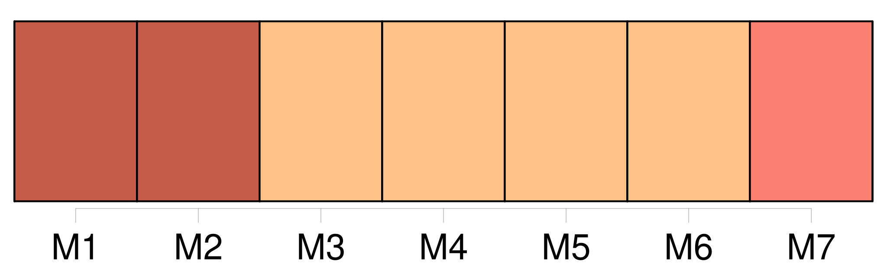
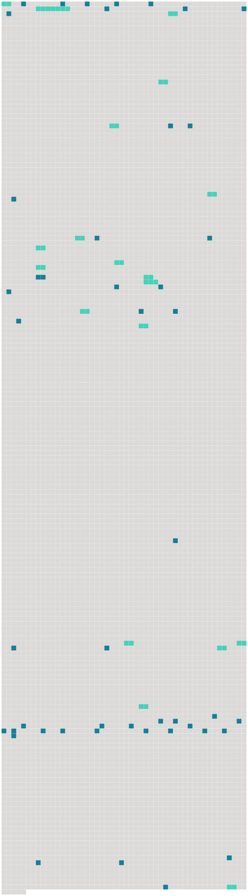

Longueur nb maillons : 66 mentions |
  |
[Son fiancé] , dans [ses] lettres, lui parlait de ce qu' [il] lisait, et s' [il] lui conseillait certains livres, [il] lui en défendait d'autres. [Il] lui avait défendu Les Fleurs du mal. Désagréablement surpris d'apprendre qu'elle était fiancée, je me réjouis de savoir qu'elle désobéissait à [un soldat assez nigaud pour craindre Baudelaire] Je fus heureux de sentir qu' [il] devait souvent choquer Marthe. Après la première surprise désagréable, je me félicitai de [son] étroitesse, d'autant mieux que j'eusse craint, s' [il] avait [lui] aussi goûté Les Fleurs du mal, que leur futur appartement ressemblât à celui de La Mort des amants. [1 phrases] [Son fiancé] lui avait aussi défendu les académies de dessin. [38 phrases]
— Encore un titre qui plairait à [mon fiancé] ! [25 phrases] [Son fiancé] a obtenu une permission, quinze jours plus tôt qu' [il] ne pensait.
[Il] est arrivé hier, et Marthe dîne ce soir chez ses futurs beaux-parents. [32 phrases] Elle n'avait jamais osé demander à [son fiancé] de l'y conduire. D'ailleurs, [il] ignorait les bars. [16 phrases] Je lui demandai de me montrer une photographie de [son fiancé] Je [le] trouvai beau. Sentant déjà quelle importance elle attachait à mes opinions, je poussai l'hypocrisie jusqu'à lui dire qu' [il] était très beau, mais d'un air peu convaincu, pour lui donner à penser que je le lui disais par politesse. [2 phrases] [Son fiancé] , dont elle savait les goûts, s'en était remis complètement à elle du soin de choisir leur mobilier. [7 phrases]
J'oubliais si vite [son fiancé] , qu'au bout d'un quart d'heure de marche, on m'aurait surpris en me rappelant que, dans cette chambre, un autre dormirait auprès d'elle.
[Son fiancé] goûtait le style Louis Xv. [4 phrases] Elle murmurait : « [Lui] [qui] voulait une chambre rose. » N'osant même plus m'avouer ses propres goûts, elle les attribuait à [son fiancé] [2 phrases] « Si elle ne m'aime pas, pensai -je, quelle raison a-t -elle de me céder, de sacrifier ses préférences, et celles de [ce jeune homme] , aux miennes?? [3 phrases] Marthe m'avait dit : « Au moins laissons [-lui] l'étoffe rose. » – « Laissons [-lui] !! [1 phrases] Mais « [lui] laisser l'étoffe rose » équivalait à tout abandonner. [8 phrases]
Je le lui promis, mais à condition qu'elle me jurât de ne jamais le dire à [son fiancé] , puisque la seule raison qui pût à la longue [lui] faire admettre ces meubles, s' [il] avait de l'amour pour Marthe, c'était de penser que tout sortait d'elle, de son bon plaisir, qui deviendrait le leur. [3 phrases] [Jacques] s'habituera bien à cette chambre », avait dit Marthe. [1 phrases]
Pour moi, quelle que fût l'issue de cette idylle, j'étais, d'avance, bien vengé de [son Jacques] : je pensais à la nuit de noces dans cette chambre austère, dans « ma » chambre! [118 phrases] Je revins tous les soirs ; je ne pensai même pas à la prier de me montrer sa chambre, encore moins à lui demander comment [Jacques] trouvait nos meubles. [51 phrases]
» Elle secouait la tête : « Avant toi, j'étais heureuse, je croyais aimer [mon fiancé] Je [lui] pardonnais de ne pas bien me comprendre. C'est toi qui m'as montré que je ne [l'] aimais pas. [1 phrases] Ce n'est pas de ne pas mentir à [mon mari] , mais de ne pas te mentir. [36 phrases] Elle y jetait souvent des lettres que [son mari] lui envoyait, chaque jour, du front. [4 phrases] Elle ne se serait pas mariée, prétendait -elle ; car, si elle avait éprouvé pour [Jacques] une sorte d'amour au début de leurs fiançailles, celles -ci trop longues, par la faute de la guerre, avaient peu à peu effacé l'amour de son cœur. Elle n'aimait déjà plus [Jacques] quand elle [l'] épousa.
Elle espérait que ces quinze jours de permission accordés à [Jacques] transformeraient peut-être ses sentiments. [Il] fut malhabile. [1 phrases] Et [Jacques] l'aimait toujours davantage. [Ses] lettres étaient de quelqu'un qui souffre, mais plaçant trop haut [sa] Marthe pour la croire capable de trahison. Aussi n'accusait [-il] que [lui] , la suppliant seulement de [lui] expliquer quel mal [il] avait pu lui faire : « [Je] me trouve si grossier à côté de toi, [je] sens que chacune de [mes] paroles te blesse.
» Marthe [lui] répondait seulement qu' [il] se trompait, qu'elle ne [lui] reprochait rien. [79 phrases]
Elle me prenait pour [Jacques] ! Or, si je voyais de quelle façon elle [l'] eût accueilli, j'apprenais du même coup qu'elle me cachait déjà quelque chose.
[Jacques] devait donc venir dans huit jours! [17 phrases] » Un costume de [Jacques] !!
Et je pensais à l'arrivée, fort possible, de [ce soldat] , puisque Marthe y avait cru. |
 |
La ressource peut être téléchargée sur la page Ortolang
Si vous avez des questions ou vous voyez des erreurs, merci d'envoyer un mail à silvia.federzoni89@gmail.com
Site développé par S. Federzoni (contact)